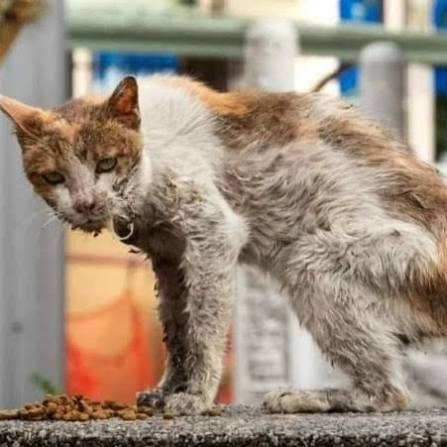

Conoce a Aquiles
Aquiles fue rescatada tras encontrarla rondando los perimetros del centro hasta que se acerco del todo y pudimos atenderla pues reportaba sintomas de deshidratacion y ambas piernas lastimadas pero pudo superar todo eso hasta hoy donde esta preparada para poder ser adoptada y ser amada por una familia.

Aquiles
Gata Calicá
Datos principales
- Edad: 1 año
- Tamaño: Mediano
- Salud: Vacunada, desparasitada y esterilizada
Personalidad:
Gata tranquila, limpia y con siestas bajo el sol.
¿Te interesa adoptarla?
Puedes visitarnos en nuestro centro en el horario de atención o escribirnos para agendar una cita y conocerla en persona.
Se hará un estudio para saber si cuentas con las condiciones ideales para brindarle una buena vida.
Volver a Adopciones